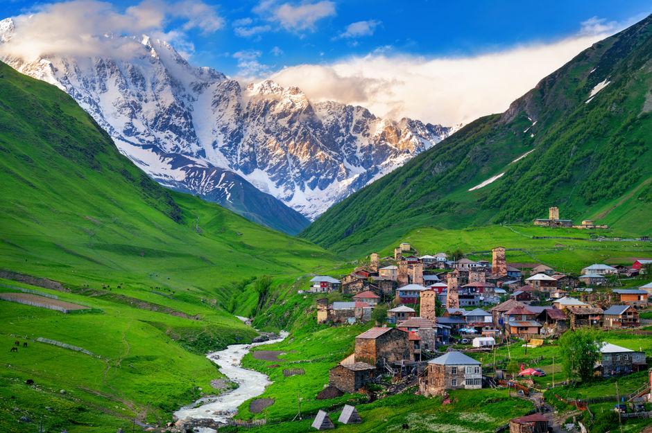
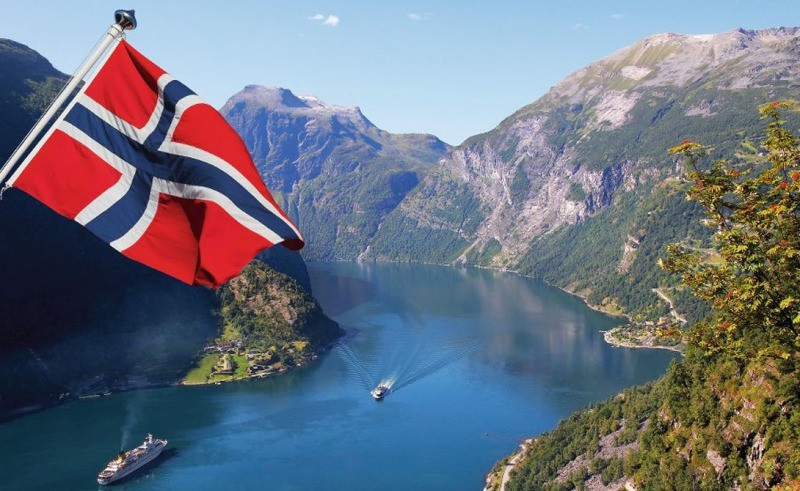
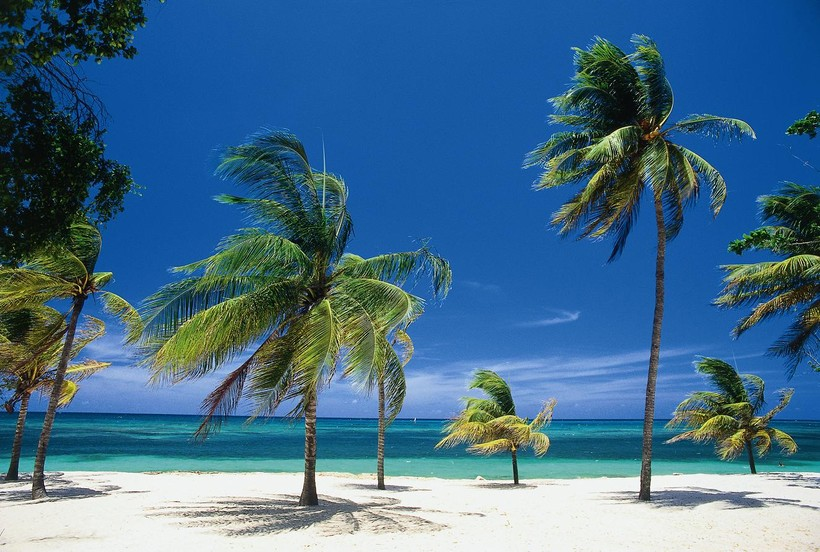
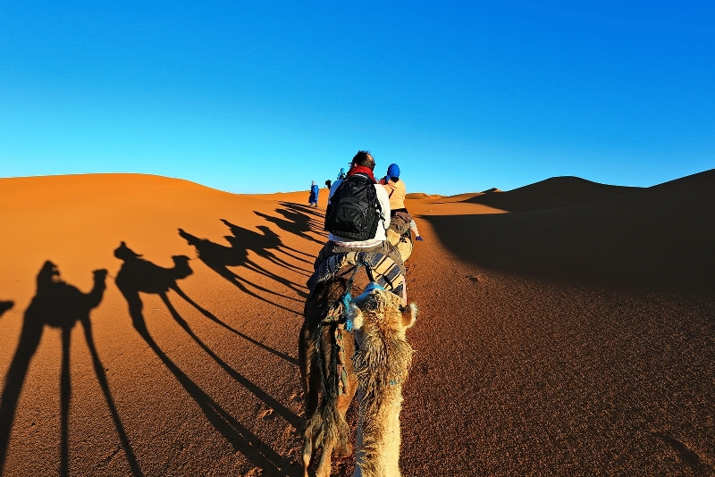

Страна: Норвегия, Дания, Швеция
Стоимость: 200 000 руб.
Дата: 28.12.2025

Страна: Россия
Стоимость: 50 000 руб.
Дата: 5.05.2025
Страна: Норвегия, Дания, Швеция
Стоимость: 200 000 руб.
Дата: 28.12.2025
Страна: Россия
Стоимость: 70 000 руб.
Дата: 03.03.2025
Страна: Греция, Италия
Стоимость: 400 000 руб.
Дата: 06.06.2025

Страна: Казахстан
Стоимость: 100 000 руб.
Дата: 08.08.2025

Страна: Норвегия
Стоимость: 150 000 руб.
Дата: 10.10.2025
Страна: Куба
Стоимость:300 000 руб.
Дата: 09.09.2025
Страна: Марокко
Стоимость:200 000 руб.
Дата: 02.02.2025
